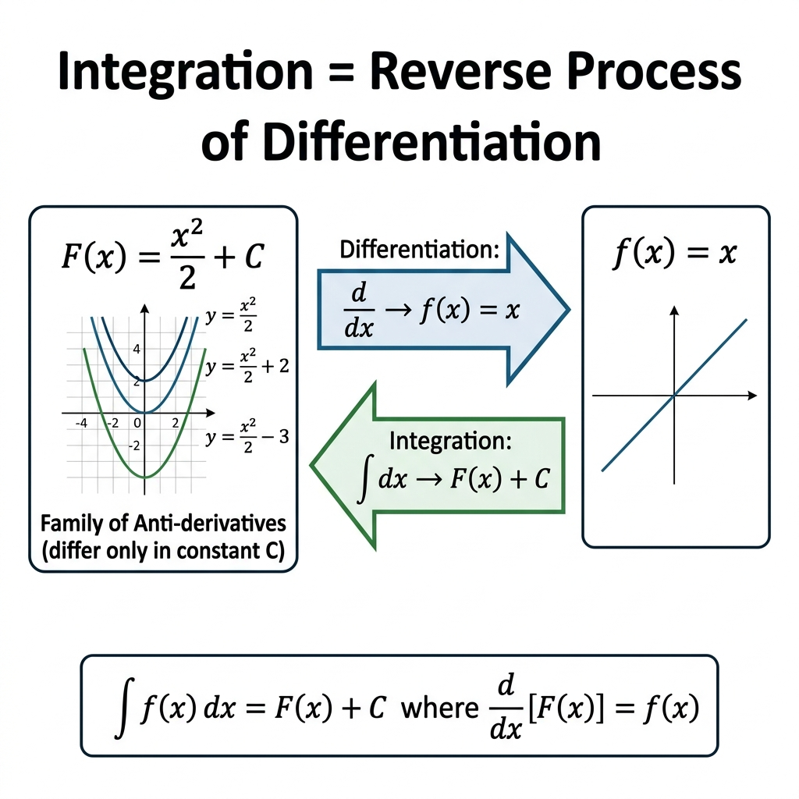
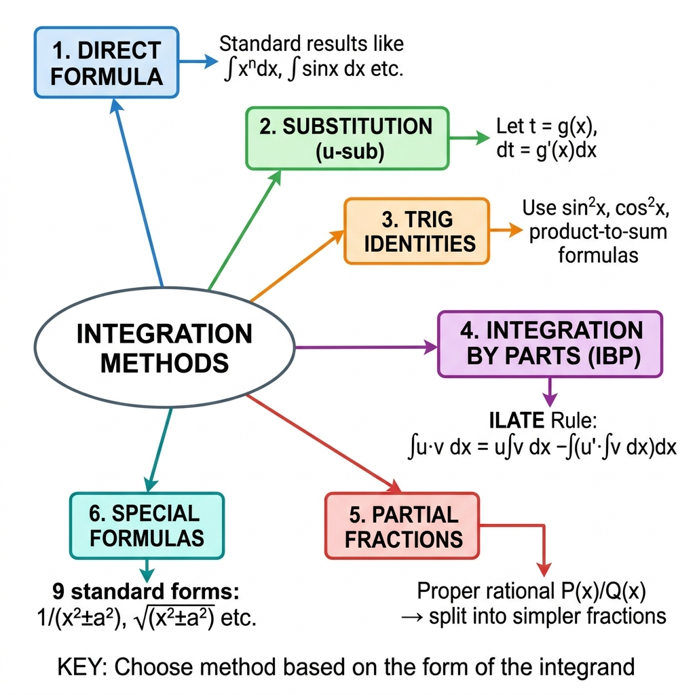
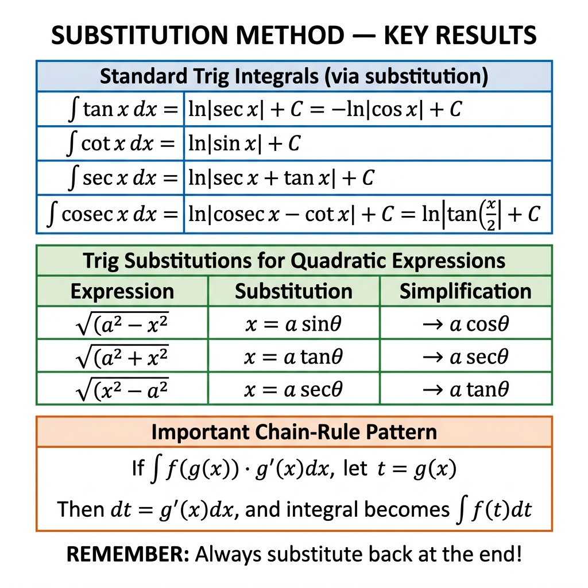

Class 12 Mathematics • Comprehensive Chapter Notes
🌐 vardaanlearning.com📞 9508841336
Chapter 7: Integrals
Board | JEE Mains | NDA/CDS — All Concepts, All Methods, All Problem Types with Detailed Solutions
📖 To the Student: Integration is the most skill-intensive chapter of Class 12 Mathematics. Unlike differentiation (which follows rigid rules), integration requires creativity — choosing the right method is everything. Boards guarantee 10–12 marks from this chapter. JEE tests 3–4 tricky questions. NDA/CDS tests standard substitutions and definite integral properties. This file covers every concept from scratch. Build each method step by step.
1. The Big Picture: What is Integration?

Fig 1.1 — Integration reverses differentiation. The constant C arises because the derivative of any constant is zero, giving a family of parallel curves.
Core Definition
If $\dfrac{d}{dx}[F(x)] = f(x)$, then $F(x)$ is called an antiderivative (or primitive) of $f(x)$.
The Indefinite Integral of $f(x)$:
$$\int f(x)\,dx = F(x) + C$$
where $C$ = Constant of Integration (any real number).
Why $+C$? The derivative of any constant is zero. So $\dfrac{d}{dx}(x^2) = 2x$, $\dfrac{d}{dx}(x^2+5) = 2x$, $\dfrac{d}{dx}(x^2-100) = 2x$. All are valid antiderivatives of $2x$. So $\int 2x\,dx = x^2 + C$ represents the entire family.

Fig 1.2 — All 6 methods of integration. The key skill is identifying which method applies to a given integrand.
Many integrals can be solved by first simplifying/expanding the expression algebraically or trigonometrically so that each term matches a standard formula.
Problem 1 — Expand First BoardQ: Evaluate $\displaystyle\int \!\left(\sqrt{x} + \frac{1}{\sqrt{x}}\right)^2 dx$
3. Method 2 — Integration by Substitution (u-Substitution)

Fig 3.1 — Key substitution results including standard trig integrals and trigonometric substitutions for quadratic expressions.
The Substitution AlgorithmRecognition: Look for $\displaystyle\int f(g(x)) \cdot g'(x)\,dx$ — a composite function multiplied by the derivative of its inner function.
Step 1: Let $t = g(x)$ (the inner/complicated part). Step 2: Differentiate: $\dfrac{dt}{dx} = g'(x)$, so $\mathbf{g'(x)\,dx = dt}$. Step 3: Substitute EVERYTHING: replace $g(x)$ with $t$, replace $g'(x)\,dx$ with $dt$. Step 4: Integrate in $t$ (simpler!). Then back-substitute $t = g(x)$.
Key Insight: If $\displaystyle\int \frac{f'(x)}{f(x)}\,dx$ — this always gives $\ln|f(x)| + C$ (substitute $t = f(x)$).
Standard Trig Integrals Derived via Substitution
Derivations (Understand, Not Just Memorize)$\int\tan x\,dx$: $= \displaystyle\int\dfrac{\sin x}{\cos x}\,dx$. Let $t = \cos x$, $dt = -\sin x\,dx$. $= -\int\dfrac{dt}{t} = -\ln|t| = \ln|\sec x| + C$
Essential Trig Identities for IntegrationPower Reduction (Most Tested):
$\sin^2 x = \dfrac{1-\cos 2x}{2}$ $\cos^2 x = \dfrac{1+\cos 2x}{2}$ $\tan^2 x = \sec^2 x - 1$
$\sin^3 x = \dfrac{3\sin x - \sin 3x}{4}$ $\cos^3 x = \dfrac{3\cos x + \cos 3x}{4}$
Product to Sum/Difference:
$2\sin A\cos B = \sin(A+B) + \sin(A-B)$
$2\cos A\sin B = \sin(A+B) - \sin(A-B)$
$2\cos A\cos B = \cos(A+B) + \cos(A-B)$
$2\sin A\sin B = \cos(A-B) - \cos(A+B)$
Problem 10 — Power of sin BoardQ: Evaluate $\displaystyle\int\sin^2 x\,dx$
Weierstrass Substitution (t = tan x/2) — For ∫dx/(a + b sin x)
Weierstrass / Half-Angle Substitution (JEE Favorite)
For integrals of type $\displaystyle\int \dfrac{dx}{a + b\sin x}$, $\displaystyle\int \dfrac{dx}{a + b\cos x}$, $\displaystyle\int \dfrac{dx}{a\sin x + b\cos x}$:
Let $t = \tan\dfrac{x}{2}$, then:
$$\sin x = \dfrac{2t}{1+t^2}, \quad \cos x = \dfrac{1-t^2}{1+t^2}, \quad dx = \dfrac{2\,dt}{1+t^2}$$
This converts ANY rational trig function into a rational function of $t$.
Let $t = \tan(x/2)$: $\sin x = \dfrac{2t}{1+t^2}$, $dx = \dfrac{2\,dt}{1+t^2}$.
$= \displaystyle\int \dfrac{1}{1 + \frac{2t}{1+t^2}} \cdot \dfrac{2\,dt}{1+t^2} = \int \dfrac{2\,dt}{(1+t)^2} = -\dfrac{2}{1+t} + C = \boxed{-\dfrac{2}{1+\tan(x/2)} + C}$
Alternative faster method: Multiply by $\dfrac{1-\sin x}{1-\sin x}$: $\displaystyle\int\dfrac{1-\sin x}{\cos^2 x}\,dx = \int(\sec^2 x - \sec x\tan x)\,dx = \tan x - \sec x + C$
Problem 14 — a·sinx + b·cosx type BoardQ: Evaluate $\displaystyle\int \dfrac{dx}{3\sin x + 4\cos x}$
Write $3\sin x + 4\cos x = R\sin(x+\phi)$ where $R = \sqrt{9+16} = 5$, $\tan\phi = 4/3$.
$= \dfrac{1}{5}\displaystyle\int\csc(x+\phi)\,dx = \dfrac{1}{5}\ln|\csc(x+\phi) - \cot(x+\phi)| + C$
Or using Weierstrass: Let $t = \tan(x/2)$, $= \int\dfrac{2\,dt/(1+t^2)}{3 \cdot \frac{2t}{1+t^2} + 4 \cdot \frac{1-t^2}{1+t^2}} = \int\dfrac{2\,dt}{6t+4-4t^2} = \int\dfrac{dt}{3t+2-2t^2}$. Complete the square and integrate.
5. The 9 Standard Special Forms — The Backbone of Integration
These 9 formulas appear repeatedly across Board, JEE, and NDA papers. Every quadratic integral eventually reduces to one of these. Memorize all 9.
Group 1 — Without Square Roots (Algebraic Forms)
$$\int \frac{dx}{x^2 - a^2} = \frac{1}{2a}\ln\left|\frac{x-a}{x+a}\right| + C \qquad\qquad (1)$$
$$\int \frac{dx}{a^2 - x^2} = \frac{1}{2a}\ln\left|\frac{a+x}{a-x}\right| + C \qquad\qquad (2)$$
$$\int \frac{dx}{x^2 + a^2} = \frac{1}{a}\tan^{-1}\!\left(\frac{x}{a}\right) + C \qquad\qquad (3)$$
Group 2 — With Square Root in Denominator
$$\int \frac{dx}{\sqrt{x^2 - a^2}} = \ln\!\left|x + \sqrt{x^2 - a^2}\right| + C \qquad\qquad (4)$$
$$\int \frac{dx}{\sqrt{x^2 + a^2}} = \ln\!\left|x + \sqrt{x^2 + a^2}\right| + C \qquad\qquad (5)$$
$$\int \frac{dx}{\sqrt{a^2 - x^2}} = \sin^{-1}\!\left(\frac{x}{a}\right) + C \qquad\qquad (6)$$
Group 3 — Square Root in Numerator (Derived via IBP)
$$\int \sqrt{a^2 - x^2}\,dx = \frac{x}{2}\sqrt{a^2-x^2} + \frac{a^2}{2}\sin^{-1}\!\left(\frac{x}{a}\right) + C \qquad\qquad (7)$$
$$\int \sqrt{x^2 - a^2}\,dx = \frac{x}{2}\sqrt{x^2-a^2} - \frac{a^2}{2}\ln\!\left|x+\sqrt{x^2-a^2}\right| + C \qquad\qquad (8)$$
$$\int \sqrt{x^2 + a^2}\,dx = \frac{x}{2}\sqrt{x^2+a^2} + \frac{a^2}{2}\ln\!\left|x+\sqrt{x^2+a^2}\right| + C \qquad\qquad (9)$$
Memory trick: Every formula starts with $\dfrac{x}{2}(\text{same root})$. Second term: $\pm\dfrac{a^2}{2} \times (\text{corresponding denominator formula 4,5,6})$.
Completing the Square — Converting Quadratics to Standard Forms
Algorithm
For $\displaystyle\int \dfrac{dx}{ax^2+bx+c}$ or $\displaystyle\int \dfrac{dx}{\sqrt{ax^2+bx+c}}$: Step 1: Make coefficient of $x^2$ unity: take $a$ common. Step 2: Complete the square: $x^2 + \dfrac{b}{a}x + \dfrac{c}{a} = \left(x + \dfrac{b}{2a}\right)^2 + \left(\dfrac{c}{a} - \dfrac{b^2}{4a^2}\right)$ Step 3: Identify: Does it match form (1), (2), or (3)? Formula (4), (5), or (6)?
Problem 15 — Completing the Square Board ★★Q: Evaluate $\displaystyle\int \dfrac{dx}{x^2-6x+13}$
Complete the square: $x^2 - 6x + 13 = (x-3)^2 - 9 + 13 = (x-3)^2 + 4 = (x-3)^2 + 2^2$
Using Formula (3) with $X = x-3$, $a = 2$:
$= \dfrac{1}{2}\tan^{-1}\!\left(\dfrac{x-3}{2}\right) + C$
Problem 16 — Negative Discriminant BoardQ: Evaluate $\displaystyle\int \dfrac{dx}{\sqrt{3-2x-x^2}}$
Key Algorithm (Board ★★★ — Guaranteed)
Express the linear numerator as: $px + q = A \cdot \dfrac{d}{dx}(ax^2+bx+c) + B$
i.e., $px + q = A(2ax+b) + B$
Equate coefficients to find $A$ and $B$. Then split:
$$\int\frac{px+q}{ax^2+bx+c}\,dx = A\int\frac{2ax+b}{ax^2+bx+c}\,dx + B\int\frac{dx}{ax^2+bx+c}$$
The first part = $A\ln|ax^2+bx+c|$; second part uses completing-the-square.
Problem 17 — Linear/Quadratic Board ★★★Q: Evaluate $\displaystyle\int \dfrac{x+3}{x^2+4x+5}\,dx$
Let $x+3 = A(2x+4) + B$: Comparing: $2A = 1 \Rightarrow A = 1/2$; $4A+B = 3 \Rightarrow B = 1$.
$= \dfrac{1}{2}\displaystyle\int\dfrac{2x+4}{x^2+4x+5}\,dx + \int\dfrac{dx}{x^2+4x+5}$
First part: $\dfrac{1}{2}\ln(x^2+4x+5)$
Second: $x^2+4x+5 = (x+2)^2+1$ → $\tan^{-1}(x+2)$
$$= \boxed{\dfrac{1}{2}\ln(x^2+4x+5) + \tan^{-1}(x+2) + C}$$
Problem 18 — Linear/Square Root BoardQ: Evaluate $\displaystyle\int \dfrac{x+2}{\sqrt{x^2+4x+5}}\,dx$
Fig 6.1 — All four types of partial fraction decomposition. Always check if the fraction is proper first (degree of numerator < degree of denominator).
When to Use
Use when the integrand is a rational function $\dfrac{P(x)}{Q(x)}$ where the denominator factors into linear or quadratic factors.
First check: Is it proper? (deg P < deg Q). If not, do long division first!
Fig 7.1 — The ILATE rule determines which function to choose as the first function (u). The function appearing first in ILATE order is always u.
IBP Formula + ILATE Rule
$$\int u \cdot v\,dx = u\int v\,dx - \int\!\left(\frac{du}{dx}\int v\,dx\right)dx$$
"I Love All To Eat" — choose the function appearing earlier in ILATE as $u$: Inverse trig → Logarithm → Algebraic → Trigonometric → Exponential
Special Cases:
• If only ONE function (like $\int\ln x\,dx$): take $v = 1$ (an Algebraic "1" as second function).
• If function appears cyclically (like $\int e^x\sin x\,dx$): see Cyclic IBP below.
Problem 23 — Classic IBP BoardQ: Evaluate $\displaystyle\int x\log x\,dx$
ILATE: L(og) before A(lgebraic), so $u = \log x$, $v = x$.
$= \log x \cdot \dfrac{x^2}{2} - \displaystyle\int\dfrac{1}{x} \cdot \dfrac{x^2}{2}\,dx = \dfrac{x^2\log x}{2} - \dfrac{1}{2}\int x\,dx$
$= \dfrac{x^2\log x}{2} - \dfrac{x^2}{4} + C = \boxed{\dfrac{x^2}{4}(2\log x - 1) + C}$
Problem 24 — Single Function (take v=1) BoardQ: Evaluate $\displaystyle\int\ln x\,dx$
$u = \ln x$, $v = 1$. $\displaystyle\int\ln x \cdot 1\,dx = \ln x \cdot x - \int\dfrac{1}{x}\cdot x\,dx = x\ln x - \int 1\,dx = \boxed{x(\ln x - 1) + C}$
Problem 25 — Inverse Trig IBP BoardQ: Evaluate $\displaystyle\int\sin^{-1}x\,dx$
Golden Formula (Board ★★★ / JEE Guaranteed)
$$\boxed{\int e^x[f(x) + f'(x)]\,dx = e^x f(x) + C}$$
How to identify: When you see $e^x$ times a sum of two terms, try to see if one term is $f(x)$ and the other is exactly $f'(x)$.
Cyclic IBP Technique (Board ★★ / NDA ★★)
When applying IBP to $\int e^x\sin x\,dx$ or $\int e^x\cos x\,dx$, you get the original integral back. Let $I$ be the integral, set up the equation $I = \ldots + I$ or $I = \ldots - I$, then solve for $I$.
Fig 8.1 — The definite integral ∫[a,b] f(x)dx equals the algebraic area between the curve, x-axis, and vertical lines x=a, x=b. Area above x-axis is positive; area below is negative.
Fundamental Theorem of Calculus (Newton-Leibniz Formula)
The Two Fundamental TheoremsFirst Theorem: Let $A(x) = \displaystyle\int_a^x f(t)\,dt$. Then $A'(x) = f(x)$.
(Differentiation and integration are inverse processes.)
Second Theorem (Evaluation Formula): If $F'(x) = f(x)$:
$$\int_a^b f(x)\,dx = \Big[F(x)\Big]_a^b = F(b) - F(a)$$
Key Note: In definite integrals, the constant $C$ cancels out: $[F(x)+C]_a^b = F(b)-F(a)$. So $C$ is irrelevant for definite integrals!
Problem 31 — Basic Evaluation BoardQ: Evaluate $\displaystyle\int_0^{\pi/2}\sin x\,dx$
Substitution in Definite Integrals — Change Limits!
⚠️ Critical Rule
When using substitution in a definite integral, you MUST change the limits of integration to match the new variable. Never revert back to the original variable before evaluating — change limits instead.
If $t = g(x)$: New lower limit = $g(a)$; New upper limit = $g(b)$.
Problem 32 — Definite Substitution Board ★★Q: Evaluate $\displaystyle\int_0^1 \dfrac{\tan^{-1}x}{1+x^2}\,dx$
King's Rule Algorithm ★★★Step 1: Call original integral $I$. Step 2: Apply $P4$: replace every $x$ with $(a-x)$. Call this $I$ also (since it equals $I$). Step 3: Add both expressions for $I$: $2I = \displaystyle\int_0^a [f(x) + f(a-x)]\,dx$. Step 4: Usually the numerator and denominator perfectly simplify or cancel! Step 5: Solve for $I = \ldots / 2$.
Recognition: King's Rule works when the function has a "complementary" structure like $\dfrac{\sin^n x}{\sin^n x + \cos^n x}$, $\dfrac{f(x)}{f(x)+f(a-x)}$, $\dfrac{\ln(\cdot)}{\ldots}$, etc.
Problem 36 — Sinⁿ/(sinⁿ+cosⁿ) General JEE ★★Q: Evaluate $\displaystyle\int_0^{\pi/2} \dfrac{\sin^n x}{\sin^n x + \cos^n x}\,dx$ for any real $n$.
Same King's Rule trick: Let $I_n = $ the integral.
Applying P4: $I_n' = \displaystyle\int_0^{\pi/2}\dfrac{\cos^n x}{\cos^n x + \sin^n x}\,dx = I_n$
$2I_n = \displaystyle\int_0^{\pi/2}1\,dx = \dfrac{\pi}{2}$
$$I_n = \boxed{\dfrac{\pi}{4}} \text{ for ALL values of }n$$ Amazing result — independent of $n$!
Even/Odd Property (P5) and Queen's Rule (P6)
Problem 37 — Odd Function (Zero Result) Board ★★Q: Evaluate $\displaystyle\int_{-\pi/2}^{\pi/2}\sin^5 x\cos^4 x\,dx$
$f(x) = \sin^5 x\cos^4 x$. Check $f(-x) = (-\sin x)^5(\cos x)^4 = -\sin^5 x\cos^4 x = -f(x)$.
$f$ is odd. Limits are symmetric $[-\pi/2, \pi/2]$. By P5: $\displaystyle\int_{-\pi/2}^{\pi/2} f(x)\,dx = \boxed{0}$
Problem 38 — Even Function (Simplify) BoardQ: Evaluate $\displaystyle\int_{-1}^{1}(x^2+\cos x)\,dx$
Problem 40 — Periodic JEEQ: Evaluate $\displaystyle\int_0^{100\pi}\sin^4 x\,dx$
$\sin^4 x$ has period $T = \pi$. Here $100\pi = 100 \cdot T$, so $n = 100$.
By P7: $\displaystyle\int_0^{100\pi}\sin^4 x\,dx = 100\int_0^{\pi}\sin^4 x\,dx = 100 \cdot \dfrac{3\pi}{8} = \boxed{\dfrac{375\pi}{1}}$
Wait: $100 \times 3\pi/8 = 300\pi/8 = \boxed{75\pi/2}$
10. Definite Integrals with Modulus and Piecewise Functions
Algorithm for |f(x)| IntegralsStep 1: Find where $f(x) = 0$ in $[a,b]$ — these are the "crossover" points. Step 2: Split the integral at each crossover using P2. Step 3: In each sub-interval, determine the sign of $f(x)$, and remove $|$ | by putting the correct sign. Step 4: Evaluate each part and add.
Problem 41 — Modulus Integral Board ★★★Q: Evaluate $\displaystyle\int_{-1}^{2}|x|\,dx$
$|x| = \begin{cases}-x & x < 0 \\ x & x \ge 0\end{cases}$. Split at $x=0$:
$= \displaystyle\int_{-1}^{0}(-x)\,dx + \int_0^2 x\,dx = \left[-\dfrac{x^2}{2}\right]_{-1}^0 + \left[\dfrac{x^2}{2}\right]_0^2$
$= \left(0 - \left(-\dfrac{1}{2}\right)\right) + (2-0) = \dfrac{1}{2} + 2 = \boxed{\dfrac{5}{2}}$
Problem 42 — Modulus of trig BoardQ: Evaluate $\displaystyle\int_0^{\pi}|\cos x|\,dx$
$\cos x \ge 0$ on $[0,\pi/2]$ and $\cos x \le 0$ on $[\pi/2,\pi]$. Split at $x=\pi/2$:
$= \displaystyle\int_0^{\pi/2}\cos x\,dx + \int_{\pi/2}^{\pi}(-\cos x)\,dx$
$= [\sin x]_0^{\pi/2} + [-\sin x]_{\pi/2}^{\pi} = 1 + (0-(-1)) = 1+1 = \boxed{2}$
Problem 43 — |x² - x - 2| JEEQ: Evaluate $\displaystyle\int_{-2}^{3}|x^2-x-2|\,dx$
$x^2-x-2 = (x-2)(x+1)$. Roots: $x=-1, x=2$. On $[-2,-1]$ and $[2,3]$: positive. On $[-1,2]$: negative.
$= \displaystyle\int_{-2}^{-1}(x^2-x-2)\,dx + \int_{-1}^{2}(-(x^2-x-2))\,dx + \int_2^3(x^2-x-2)\,dx$
Compute each: $\left[\dfrac{x^3}{3}-\dfrac{x^2}{2}-2x\right]$
At $x=-1$: $\dfrac{-1}{3}-\dfrac{1}{2}+2 = \dfrac{7}{6}$. At $x=-2$: $\dfrac{-8}{3}-2+4=-\dfrac{2}{3}$.
Part 1: $\dfrac{7}{6}-(-\dfrac{2}{3}) = \dfrac{7}{6}+\dfrac{4}{6}=\dfrac{11}{6}$
At $x=2$: $\dfrac{8}{3}-2-4=-\dfrac{10}{3}$. Part 2: $-[{-\dfrac{10}{3}}-\dfrac{7}{6}] = \dfrac{10}{3}+\dfrac{7}{6}=\dfrac{9}{2}$
At $x=3$: $9-\dfrac{9}{2}-6=\dfrac{3}{2}$. Part 3: $\dfrac{3}{2}-(-\dfrac{10}{3})=\dfrac{3}{2}+\dfrac{10}{3}=\dfrac{29}{6}$
Total: $\dfrac{11}{6}+\dfrac{9}{2}+\dfrac{29}{6} = \dfrac{11+27+29}{6} = \dfrac{67}{6}$
MP-6 — Greatest Integer Function JEEQ: Evaluate $\displaystyle\int_0^2\lfloor x^2\rfloor\,dx$ (where $\lfloor \cdot\rfloor$ is the floor/GIF)
$x^2 = 0$ at $x=0$; $=1$ at $x=1$; $=2$ at $x=\sqrt{2}$; $=3$ at $x=\sqrt{3}$; $=4$ at $x=2$.
Intervals: $[0,1)$: $\lfloor x^2\rfloor=0$; $[1,\sqrt{2})$: $=1$; $[\sqrt{2},\sqrt{3})$: $=2$; $[\sqrt{3},2)$: $=3$; at $x=2$: $=4$ (just a point).
$= 0\cdot(1-0) + 1\cdot(\sqrt{2}-1) + 2(\sqrt{3}-\sqrt{2}) + 3(2-\sqrt{3})$
$= \sqrt{2}-1 + 2\sqrt{3}-2\sqrt{2} + 6-3\sqrt{3} = 5 - \sqrt{2} - \sqrt{3}$
MP-7 — Limit as Sum (Definite Integral as Sum) JEE ★★★Q: Evaluate $\displaystyle\lim_{n\to\infty}\dfrac{1}{n}\left(\sqrt{\dfrac{1}{n}} + \sqrt{\dfrac{2}{n}} + \cdots + \sqrt{\dfrac{n}{n}}\right)$
This is of the form $\displaystyle\lim_{n\to\infty}\dfrac{1}{n}\sum_{r=1}^{n}f\!\left(\dfrac{r}{n}\right) = \int_0^1 f(x)\,dx$
Here $f\!\left(\dfrac{r}{n}\right) = \sqrt{\dfrac{r}{n}}$, so $f(x) = \sqrt{x}$.
$= \displaystyle\int_0^1\sqrt{x}\,dx = \left[\dfrac{2}{3}x^{3/2}\right]_0^1 = \boxed{\dfrac{2}{3}}$
MP-8 — Leibniz Rule (Differentiation under Integral Sign) JEEQ: Find $\dfrac{d}{dx}\displaystyle\int_0^{x^2}\sin t^2\,dt$
By Fundamental Theorem (First Theorem), if $g(x) = \displaystyle\int_0^{h(x)} f(t)\,dt$, then $g'(x) = f(h(x)) \cdot h'(x)$.
Here $h(x) = x^2$, $f(t) = \sin t^2$.
$\dfrac{d}{dx}\displaystyle\int_0^{x^2}\sin t^2\,dt = \sin(x^2)^2 \cdot 2x = \boxed{2x\sin x^4}$
14. Common Mistakes & Exam Strategy
⚠️ Top 8 Mistakes to Avoid1. Writing $\displaystyle\int\dfrac{1}{x^2}\,dx = \dfrac{1}{x} + C$ — WRONG! Use power rule: $\int x^{-2}\,dx = \dfrac{x^{-1}}{-1} = -\dfrac{1}{x}+C$. 2. Forgetting $+C$ in indefinite integrals — costs marks in boards every time. 3. In substitution, forgetting to change $dx$ (e.g., writing $dx$ instead of $dt$). 4. In definite integral substitution — NOT changing the limits. Fatal error! 5. Applying ILATE backwards — choosing Exponential as first function when polynomial is present. 6. $\displaystyle\int\dfrac{dx}{x^2+a^2} = \dfrac{1}{a}\tan^{-1}(x/a)$ — forgetting the $\dfrac{1}{a}$ factor outside. 7. $\displaystyle\int\dfrac{f'(x)}{f(x)}\,dx = \ln|f(x)|$ — valid only when numerator is EXACTLY the derivative of denominator (or a constant multiple). Check carefully! 8. Using King's Rule on non-symmetric limits — P3 works for ANY $[a,b]$, but P5 (even/odd) only works for $[-a,a]$.
🎯 Exam Strategy — Last Revision
📌 Direct formula: First check if it matches any standard formula directly.
📌 Substitution check: Is there a function and its derivative present? Use sub.
📌 IBP triggers: Algebraic × Trig, Algebraic × Log, Algebraic × Exponential.
📌 Partial fractions: Rational function? Degree of P < degree of Q? Factorize Q.
📌 Completing square: Quadratic in denominator — always complete the square first.
📌 Definite integral trick: Complex integrand + symmetric limits → try King's Rule.
📌 Symmetric limits $[-a,a]$: Always check even/odd first.
📌 $\int_0^{\pi/2}\sin^n x$: Use Walli's formula directly for speed.
📌 $e^x$ present: Try the golden formula $\int e^x[f+f']\,dx = e^xf+C$.
📌 Boards 5-mark question: Write method name, set up substitution/IBP clearly, show all steps.